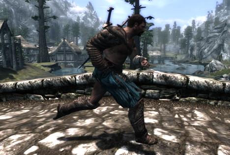
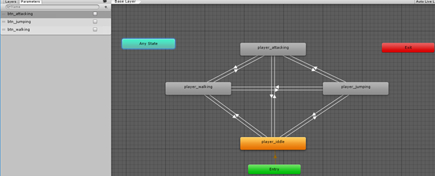
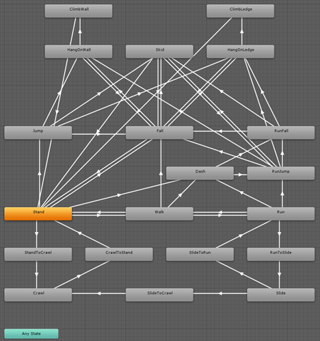
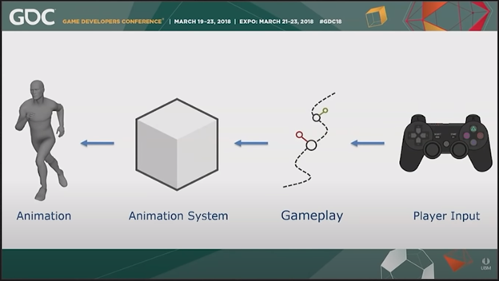
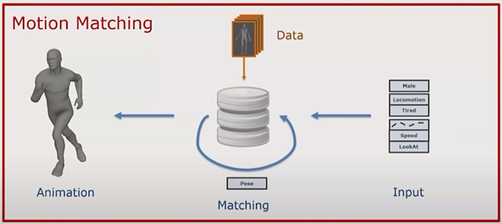
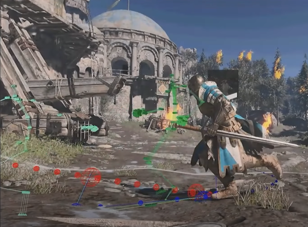
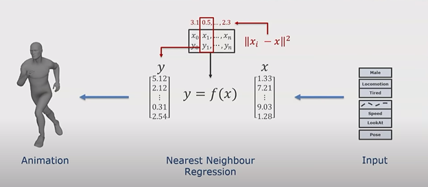
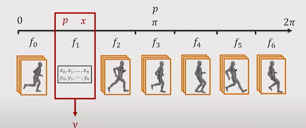
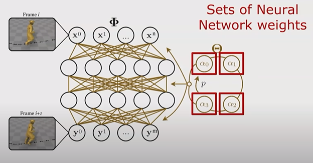
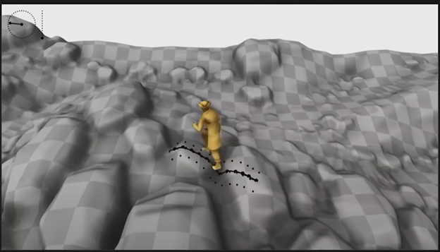

One of the most important components of 3D game development happens to also be one of the most overlooked by the layman: animation state development. This single aspect of development does not only play into the overall aesthetics of a game, but it also plays a heavy part in gameplay and information presentation. For example, a fighting game may allow the player to chain together inputs in order to perform combos, and a game’s system will need to smoothly transition between different key frames in order to let the player know that these attacks were correctly performed. In a more adventure-oriented genre, a player’s current running velocity, terrain, and stamina state may all play a roll on the final running pose at any given point. To say that handling these animation states would eventually get complex would be a massive understatement.
This aspect of game design may initially seem trivial but imagine this scenario: you’re playing your favorite action-oriented adventure game. You’re running through a grass plain, but something seems off. No matter how you modify the speed of your character and no matter the size of the rocks that your character must assumedly maneuver, the running animation remains static. You press the ‘pickup’ input in order to reach out and pick up a flower, but instead your character reaches directly out in front of you and grasps at air, all while your character is moving without moving their legs. There is a distinct disconnect between the player’s inputs/desired actions and how the game affirms the performance of these actions.
A screenshot of The Elder Scrolls V: Skyrim, specifically from a game modification that seeks to add and improve animation transitions from the base game [SOURCE]
Simply put, animation state development is difficult. As the verbiage of a game grows, the amount of distinct animation states and transitions between them grows exponentially. In addition, there are tons of circumstances that each animation state may have to consider and consequently modify their poses. However, fairly recent advancements in game engine development may mean that these aspects may become easier to develop for. In this blog post, I’ll be introducing the concept of utilizing neural networks and machine learning in order to efficiently develop animation state locomotion for a variety of player scenarios.
Game engines and development tools all handle animation state machines differently, but in general, they follow this workflow: import a rigged model and a large set of animations (typically done iteratively by artists using specialized modeling software), create a discrete set of animation states (such as idle, running, jumping, attacks, etc.), create transitions between these states (for example, idle or jumping can transition to jumping via input), and cleaning (ensure that the transitions between states is smoothly interpolated, account for compound states like being able to run from the waist down and attack from the waist up, and utilize physics constraints for stuff like the shock absorption after a jump or foot placement in idle and running). In addition, any given state can have its own independent state machine within it, so in a way, the overall state machine acts as a sort of hierarchy of pose information. Whenever a new state is introduced, these steps will often need to be redone for a large portion of existing states. For example, if a ‘pickup’ animation is introduced, you may need to specify that it can only be performed while idle or running, may be done in compound with the aforementioned states, and may utilize physics constraints to reach for the target object, which may deform the legs, back, and arms as well.
An example of an animation state machine in Unity, a commercial game engine and development tool [SOURCE]
Now I want to reaffirm why an easier, machine-learning-oriented approach may be necessary. As previously mentioned, as more verbs are introduced into the game prototype, the complexity of these animation states will grow exponentially. Say we wanted to add more verbs and special transitions, such as crawling, siding, run-jumping, and ledge-hanging. In this case, we’d end up with a state machine that’s quite a bit more involved:
A screenshot taken from a Unity project on a Unity forum post. [SOURCE]
On the surface, this is already starting to become difficult to manage with several arrows pointing to many discrete states. This does not even display information regarding physics constraints, the circumstances for state transitions to occur, the interpolation between different states, and the delta time between state transitions. Now imagine adding a simple ‘pick-up’ state. Now you need to ask how can other states transition between it, if the action can be compounded with other states, if it can be interrupted by certain events (such as falling or taking damage), and how to seamlessly blend into this state. It’s doable, but it would surely take a lot of human authoring and trial and error in order to accomplish. For this reason, we have a motivation to try other solutions, such as machine learning.
So we’ve seen the general workflow of how discrete animation states are hand-authored. Now how does machine learning fit into all of this? For this, I will primarily be referencing from a GDC (Game Developer’s Conference) talk by Ubisoft’s Daniel Holden in which he explains, at a high level, how their engine handles animation authoring for game series like Watch Dogs and Assassin’s Creed. In addition, I will be referencing an article from Neurohive for high-level implementation details. Links to both can be found in the ‘References’ section.
This first step of this system is to compartmentalize the flow of how animation is simulated. At a high level, player input and gameplay information is sent into a black-box animation system, which then outputs a final animation pose for any given frame in a game’s simulation.
High-level data flow for animation system, Ubisoft GDC presentation [SOURCE]
At a high level, the neural network animation system will work in three distinct components: separate data, specific desired variables, and generalize solution.
In a typical animation state machine, states will contain a distinct animation or pose along with any necessary information for blending and physics constraints. However, for this approach, we want to separate this data out based on certain tags (such as male, idle, tired, etc.) rather than long descriptors (male_idle_tired vs. male_idle_energetic). Ideally, these tags would be the same among many states, except for unique poses, such as ones shown in cutscenes. These tags allow us to tie states to gameplay elements (such as velocity constraints and attack states). In the long run, this makes maintaining large state machines easier as it scales as we can simply describe desired states rather than trying to author large state machines.
Ubisoft GDC presentation, using input and tag parameters in order to find best matching poses in an animation database [SOURCE]
Once our animation system can be treated as a database with a tag system for querying final poses, we can start defining variables. For example, we may have a large pool of animations that match simple running locomotion. When inserted into a database, these running animations can be tagged based on different constraints, gameplay scenarios, and user input. At runtime, animations can be cycled through based on what constraints fit the best (such as player character information, current speed, the delta between current and desired running directions, materials under the player’s feet, and information regarding recent poses). The graphic below shows how this system can find the best animation given the current simulated constraints.
Demonstration of For Honor’s animation matching system, Ubisoft GDC presentation. Red = desired direction, blue = current gameplay direction, green = possible poses that match parameters in database [SOURCE]
Attempting to match multiple constraints to a constantly growing database of poses can be very costly, especially given that we’re working with a game that must maintain an acceptable framerate at runtime. Thankfully, the aforementioned setup is a great candidate for a neural-network based solution. In the end, we are trying to map out these constraints to animations in input-output pairs, which can be solved using a subset of machine learning known as “supervised learning”. This process of predicting a continuous outcome variables based on an input is known as “regression” (or “nearest neighbor regression” since we’re working with multiple mapped variables).
Mapping tag constraints to animation poses using nearest neighbor regression, Ubisoft GDC presentation [SOURCE]
This system as is works reasonably well for developing somewhat seamless poses. Given a large animation database and some blending between animation transitions, we get decent results with reasonable time and memory complexity (~1 ms and ~200 mb in Ubisoft’s case). However, final poses tend to have a strange “jitteriness” in transition in addition to occasional jarring poses. For many projects, bringing it to this step may be considered good enough. However, applying the neural-net based solution to our regression could yield more aesthetically pleasing results.
Unfortunately, neural-networks aren’t a simple “plug-and-play solution”. Final poses will rely heavily based on the representation of inputs and outputs, and how the system actually decides to output interpolated poses. For example, if the player were to step forward from an idle pose, a system will need to decide whether to step with the left or right foot first, but a naïve implementation may end up choosing to step with a blend of both, resulting in even more jarring locomotion than our previous solution. Because of this, we’ll need a way to solve this ambiguity in our system using a system of “bins” and “phases”.
A phase can be defined as some sort of slice in a cycle of animation locomotion. For example, a step with the left foot can represent 0, a step with a right foot can represent pi, and returning to the left foot can represent 2*pi. Along these phases, several animation poses can be placed into discrete “bins”, which contain several viable candidates for a pose at any given moment.
Phase and bin system for animation neural network, Ubisoft GDC presentation [SOURCE]
Neural network representation, using phase value to cycle through weight value at runtime, Ubisoft GDC presentation [SOURCE]
Once this setup is complete, the system only needs two things: training and human judgement. The system can now train on random gameplay and simulated input constraints, which in turn develops key pathways for selecting animation poses. Once a large set of data is trained, humans (likely artists and designers) will need to review the generated locomotion, and decide on how neural network variables should be shifted to yield aesthetically pleasing results.
An agent cycling through randomly generated player inputs and gameplay circumstances in order to develop its neural network, Ubisoft GDC presentation [SOURCE]
The final results are fairly staggering. In Ubisoft’s results, they can bake an animation state machine with either (1 ms / 10 mb) or (0.5ms / 100 mb) response times and memory usage respectively. In addition, the results tend to almost always be more aesthetically pleasing than the previous non-neural-net, regression-based solution as this also accounts for human judgement.
In conclusion, machine learning-driven animation development has the potential to revolutionize how animation state machines are developed. More specifically, it proves itself to be an extremely valuable asset in large AAA video games, where traditional animation state machines can grow exponentially in complexity. While it does require developers to learn while new skill sets and give up, to some degree, precise control of animation states, it allows developers to save time in animation development which, in turn, allows them to work on other important aspects of development.
Unity's Animation State Machine Documentation [LINK]
"Character Control with Neural Networks and Machine Learning", a GDC Presentation by Ubisoft's Daniel Holden [LINK]
"Neural Network Can Animate Characters In Game Environment", Neurohive's FSM Implementation Details [LINK]
"Regression Analysis Essentials For Machine Learning", STHDA Explanation of Regression Analysis [LINK]
"Neural Networks Bias And Weights", Medium's Explanation of Neural Network Bias and Weight Functions [LINK]
Like what you see? Feel free to reach out with networking, consulting, or employment opportunities!
Copyright © All rights reserved | This template is made with by Colorlib